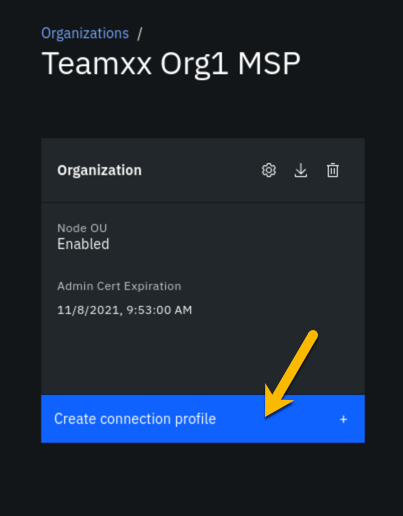
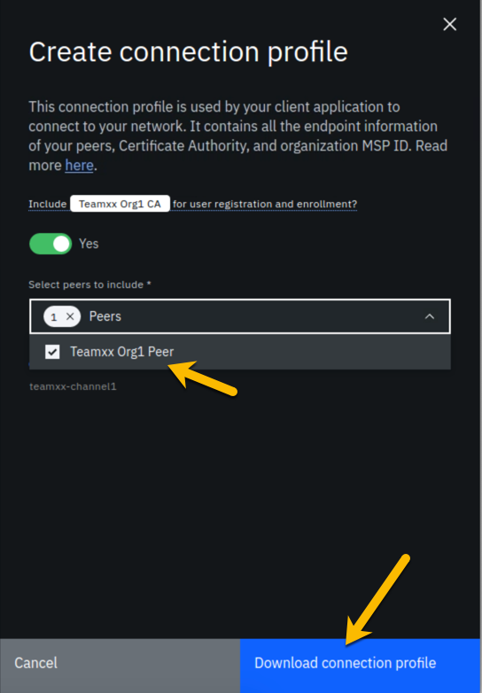
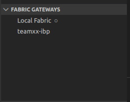

Build your first network on Linux on IBM Z Lab Part 2 - Deploying a Smart Contract¶
This lab will walk you through deploying a smart contract called commercial-paper that is supplied as a sample by the Hyperledger Fabric project. This lab assumes that you have successfully completed the IBM Blockchain Platform v2.5.0 Lab Part 1 - Create a Blockchain Network. If you have not completed part 1, you must do so before continuing with this lab.
Section 1: Download the Commercial Paper Smart Contract package¶
Step 1.1: You need to download the .cds package from here: commercial-paper. If you are not prompted for a location in which to save it, then your browser is probably saving it at a default location, which is probably /home/blockchain/Downloads.
Section 2: Install Commercial Paper Contract to your Blockchain Network¶
Step 2.1: Click on the Smart Contracts icon in the icon palette on the left, and in the Smart contracts panel, click the blue Install smart contract button:

Step 2.2: In the (Step 1 of 2) Install smart contract side panel, using the blue Add File button, upload the papercontract@0.0.4.cds package (from the location /home/blockchain/Downloads or from wherever you saved it), and click the Next button. The screenshot that follows shows that the name and version of the smart contract have replaced the Add File button:

Step 2.3: Now select both peers (ensure each has a check mark to the right of it) and click the Install smart contract button. Note that in this lab we are installing to peers from two separate organizations. In most "real world" situations, the smart contract would be shared with members of the blockchain network, in a private Github repo or through some other means, and each organization would install the smart contract to its own peers through its own console.

Step 2.4: Now, you should see papercontract appear in the Installed smart contracts section of the Smart contracts screen:

Section 3: Instantiate Paper Contract¶
Step 3.1: From the Installed smart contracts section of the Smart contracts panel, select the three dots to the right of papercontract and select Instantiate:

Step 3.2: In the Instantiate smart contract (Step 1 of 5) sidebar panel, select teamxx-channel1, where xx is your two-digit team ID, in the Channel field and click the Next button:

Step 3.3: In the Step 2 of 5 sidebar panel, select both peers in the Members list (ensure that each has a checkmark to the right of it), select 2 out of 2 members need to endorse transactions from the Policy dropdown list, and then click the Next button:

Step 3.4: In the Step 3 of 5 sidebar panel, select Teamxx Org1 Peer, where xx is your two-digit team ID, in the Peer field, as the peer to approve proposals for instantiating the smart contract, and click the Next button:

Step 3.5: In the Step 4 of 5 sidebar panel, skip adding a private data collection and just click Next:

Step 3.6: In the Step 5 of 5 sidebar panel, leave the function name blank (it will by default call the init function in the smart contract which is what we want for papercontract) And leave the arguments box blank. Simply click the Instantiate smart contract button:

Step 3.7: First time instantiation could take a while because the Node.js smart contract is pulling in all the package dependencies from the public NPM registry. After a few minutes, instantiation should complete. If you scroll down on the Smart Contracts panel, you will see the list of Instantiated Smart Contracts now includes papercontract:

Read this if your instantiation failed
If you receive a message indicating that an error occurred during instantiation, click the Show error details link. If it states that the grpc web client timed out the proposal after five minutes, simply click the Instantiate smart contract button again. There is a hard-coded timeout of five minutes, and sometimes in our lab system it takes just over five minutes to build the Docker image for the smart contract. Even if this timeout occurs, the Docker image does get built, so that if you try it again, the Docker image already exists, and you will most likely succeed on this second attempt in much less than five minutes.
Now that you have the smart contract instantiated on the channel, you are ready to move on to the next step.
Section 4: Register client user for TeamXX Org1¶
Now you need to register a client user to use to enroll application identities for Org1. In real life, as the blockchain network administrator for your organization, you might want to register a distinct client user for each business application that has a need to access the smart contract. In this case, the same client user is used to enroll a number of application identities. Another development pattern is to register a distinct client user for each distinct application identity. You can register a client user through the Fabric application SDK as well, though that is not covered in this lab.
Step 4.1: Go to the Nodes view on your IBM Blockchain Platform Console, and navigate to the Certificate Authorities section. Then select Teamxx Org1 CA, where xx is your two-digit team ID:

Step 4.2: Select the Register user button:

Step 4.3: In the Register User (Step 1 of 2) sidebar panel, fill in the fields as directed by the table below, and then click the Next button:
| Field label | Value | Comments |
|---|---|---|
| Enroll ID | app-dev | |
| Enroll secret | app-devpw | click the "eye" icon to see the password |
| Type | client | This will be populated for you |
Step 4.4: In the Register User (Step 2 of 2) sidebar panel, just click the Register user button.
Step 4.5: Now you should see the app-dev user you added show up under Registered users:

Section 5: Register client user for TeamXX Org2 (Optional)¶
Now we will register a client user for enrolling application identities for Org2. This section is optional. In the sections that follow, you will only connect directly to Org1's peer. You will only need to register a client user for Org2 if you wish to connect to go above and beyond the steps in this lab and try connecting directly to Org2's peer.
Step 5.1: Go to the Nodes view on your IBM Blockchain Platform Console, and navigate to the Certificate Authorities section. Then select Teamxx Org2 CA, where xx is your two-digit team ID.
Step 5.2. Follow the same steps from Section 4, Steps 4.2-4.5 in order to register a client user, also named app-dev, for Org2.
Section 6: Download the connection profile to connect to TeamXX Org1 Peer¶
The connection profile is a JSON file that describes all the connection endpoints, MSP information, channel information and certificate information required to connect to your organization's peer. A client application wishing to invoke transactions against a smart contract would require this file to obtain the necessary information needed to make that connection. Without IBM Blockchain Platform, this is a file you would put together yourself using existing sample connection profiles available in the Hyperledger Fabric community. With the IBM Blockchain Platform, you can download a ready-made file from the IBM Blockchain Platform Console.
Step 6.1: Select the Organizations icon from the icon palette on the left, then click the Teamxx Org1 MSP tile, where xx is your two-digit team ID:

Step 6.2: Click the blue Create connection profile button:

Step 6.3. In the Create connection profile sidebar panel, select your Teamxx Org1 Peer, where xx is your two-digit team ID, and click the blue Download connection profile button:

Use the file save dialog to save the profile under its default name of teamxxorg1msp_profile.json (where xx is your two-digit team ID). Keep track of where you saved this profile, as you will be using it in the next section.
Section 7: Create a new Gateway in VSCode IBM Blockchain Platform Extension¶
Note
You will be using the IBM Blockchain Platform VSCode extension for the next few sections but leave your Firefox browser tab for the IBM Blockchain Platform Console open (you can minimize your browser window if you'd like) as you will be going back to it in the latter half of Section 10.
Now you can use that connection profile you just downloaded to create a new gateway in VSCode IBM Blockchain Platform Extension.
Step 7.1: In the VSCode IBM Blockchain Platform view, click on the + in the Fabric Gateways panel (if you are still connected to your local gateway you will need to disconnect from this gateway first. You can do so by clicking on the door icon where the + should be):

Step 7.2: Then in the popup window at the top of VSCode, select Create a gateway from a connection profile:

Step 7.3: Next you will be asked to enter the name of the gateway. Type teamxx-ibp, remembering to replace xx with your team number, and press Enter.
Step 7.4: Finally, you will be asked to browse to the connection profile that you downloaded from Section 6. Browse to it, and click Select.
Step 7.5: Upon success, you will see teamxx-ibp, where xx is your two-digit team ID, show up in the Fabric Gateways panel as follows:

Section 8: Create a new wallet and identity in VSCode IBM Blockchain Platform Extension¶
Step 8.1: In the VSCode IBM Blockchain Platform view, click on the + in the Fabric Wallets panel:

Step 8.2. Select create a new wallet and add an identity in the popup window:

Step 8.3: Type teamxx-wallet in the next popup window, where xx is your two-digit team ID, and press Enter:

Step 8.4: Type teamxxorg1msp as the MSPID, where xx is your two-digit team ID, and press Enter:

Step 8.5: Pick Select a gateway and provide an enrollment ID and secret:

Step 8.6: Type isabella as the name for the identity, and press Enter:

Step 8.7: Choose teamxx-ibp as the gateway you want to enroll and identity with, where xx is your two-digit team ID:

Step 8.8: Type app-dev as the enrollment ID and press Enter:

Step 8.9: Type app-devpw as the enrollment secret and press Enter:

Step 8.10: Upon success you will see the new wallet and identity in the Fabric Wallets panel:

Section 9: Connect to the teamxx-ibp gateway¶
Now that you have created a wallet and enrolled an ID and password, you are ready to connect to the teamxx-ibp gateway.
Step 9.1: Click on teamxx-ibp, in the Fabric Gateways panel, where xx is your two-digit team ID:

Step 9.2: In the popup window, select teamxx-wallet, where xx is your two-digit team ID:

Step 9.3: Upon success, you will also see your new gateway represented in the Fabric Gateways panel. Expand the twisties until you see your papercontract transactions:

Section 10: Issue a transaction to test the connection¶
Now we are ready to submit a test transaction.
Step 10.1: From the Fabric Gateways panel, expand into the papercontract@0.0.4 contract, right-click on the issue transaction and select Submit Transaction:

Step 10.2: Copy and paste the following inside the brackets as the argument, and then press Enter:
"MagnetoCorp","00002","2020-07-31","2020-12-31","6000000"
Example:

Step 10.3: Press Enter on the transient data popup window.
Read this if your transaction timed out
This step may take several minutes. When you instantiated the smart contract in Section 3, it built a Docker image for the smart contract on only one peer, the peer on which you chose to run the instantiate proposal (see Step 3.4). The Docker image for the other peer will be built on first use, and this transaction may time out. If it does, simply run steps 10.1 through 10.3 again, and it should succeed this time.
Step 10.4: Upon success you will see the results from the issue transaction in the OUTPUT panel in VSCode, similar to what is shown here:
[4/15/2020 4:49:08 PM] [INFO] submitTransaction
[4/15/2020 4:49:15 PM] [INFO] submitting transaction issue with args MagnetoCorp,00002,2020-07-31,2020-12-31,6000000 on channel teamxx-channel1
[4/15/2020 4:49:26 PM] [SUCCESS] Returned value from issue: {"class":"org.papernet.commercialpaper","key":"\"MagnetoCorp\":\"00002\"","currentState":1,"issuer":"MagnetoCorp","paperNumber":"00002","issueDateTime":"2020-07-31","maturityDateTime":"2020-12-31","faceValue":"6000000","owner":"MagnetoCorp"}
Step 10.5: Now, return to the IBM Blockchain Platform Console at your assigned URL in Firefox. Go to the Channels view, and click on the teamxx-channel1 tile, where xx is your two-digit team ID:

Step 10.6: You should see that the block height is now 6. In the Block History section, click on the block at the top of the table:

Step 10.7: Now you will see a list of transactions in block #5. Click on the topmost transaction (there should only be one):

Step 10.8: In the Transaction sidebar panel you should see the issue transaction and its input arguments in the Input section, and the output of the transaction in the Output section, from the transaction that you just submitted via the VSCode IBM Blockchain Platform Extension.

Step 10.9: OPTIONAL: you can submit additional transactions through VSCode, and watch the block height increase and look at the transaction in the IBM Blockchain Platform Console.
Congratulations!! You've now successfully enrolled an application identity and used it to invoke transactions against a smart contract deployed to IBM Blockchain Platform v2.5.0!